Advanced Data Science, Unsupervised Anomaly Detection, Multi-Model Time-Series Forecasting & Climate Intelligence
Transforming 98,604 raw weather records into a rigorous, leak-free time-series forecasting dataset.
Partly cloudy vs Partly Cloudy) and normalized location names.Uncovering trends, correlations, and macro patterns across 41 atmospheric dimensions.
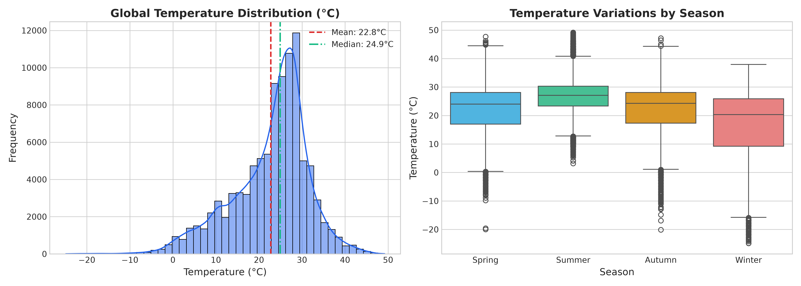
Global temperatures exhibit a bimodal distribution with a mean of 22.8°C and median of 24.9°C. Seasonal boxplots highlight stark shifts between Summer (median ~28°C) and Winter (median ~15°C).
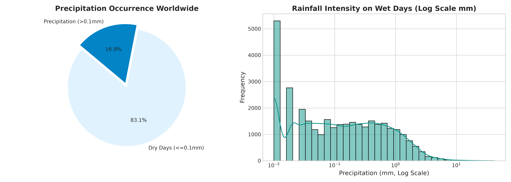
Over 70% of days recorded dry conditions (≤0.1 mm). For days with active precipitation, rainfall intensity follows a log-normal distribution with extreme flash precipitation events exceeding 40 mm.
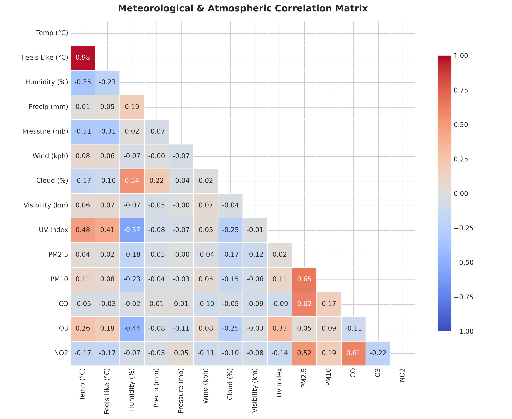
Strong positive correlation between Temperature and UV Index (r = 0.54) and Ozone (r = 0.42). Strong negative correlation between Temperature and Relative Humidity (r = -0.48), confirming thermodynamic evaporation dynamics.
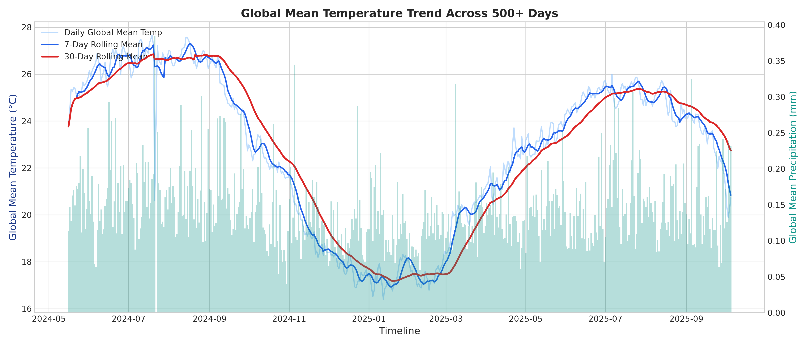
Tracking global mean temperatures and 7-day/30-day moving averages from May 2024 through October 2025. Demonstrates northern-hemisphere dominated summer peaks and winter troughs.
Detecting atmospheric anomalies using unsupervised Isolation Forest and domain-specific meteorological extreme thresholds.
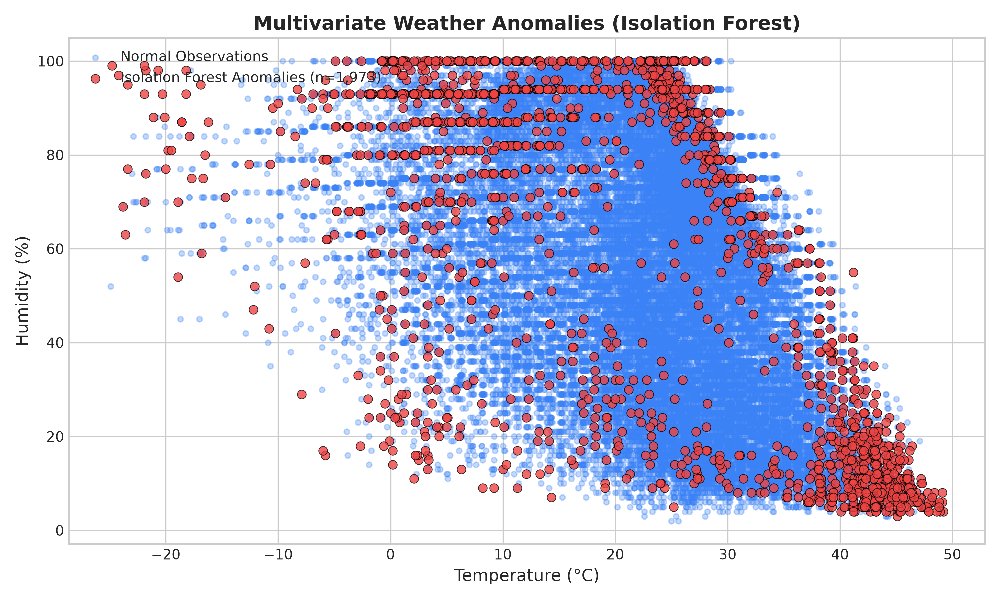
The Isolation Forest model (contamination = 2.0%) successfully isolated 1,973 multivariate anomalies combining unusual pairings, such as high-temperature low-humidity dust storms and severe freezing fog.
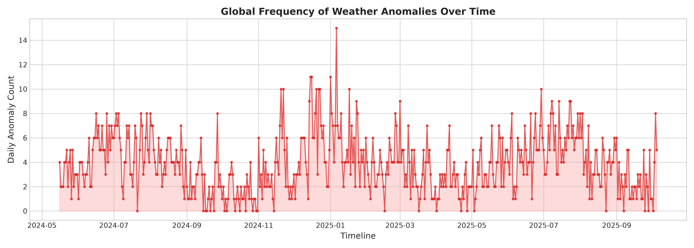
Temporal tracking of anomalous weather days indicates severe spikes during mid-summer heatwaves (July/August) and extreme winter vortex events (January/February).
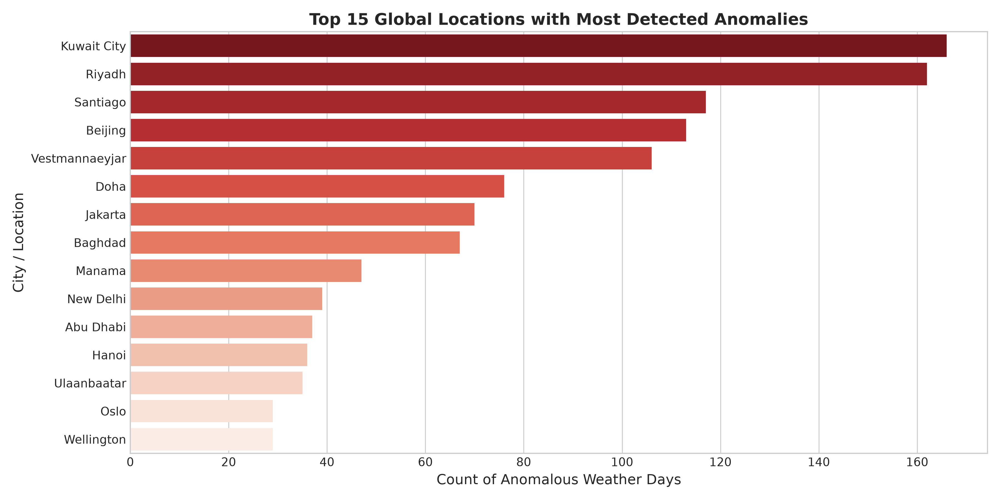
Locations subject to extreme continental climates (e.g. Ulaanbaatar, Yakutsk, Riyadh, Kuwait City) registered the highest concentration of severe weather departures.
Backtested strictly on 19,883 out-of-sample future records (chronological split) across all 254 cities.
| Model Name | MAE (°C) | RMSE (°C) | R² Score | MAPE (%) | Max Error (°C) | Status |
|---|---|---|---|---|---|---|
| Meta-Blend Ensemble Champion | 1.4853 | 2.0669 | 0.9137 | 7.79% | 14.5249 | Optimal Stacking |
| Gradient Boosting Regressor | 1.4869 | 2.0702 | 0.9134 | 7.83% | 14.3330 | Single Best ML Model |
| Random Forest Regressor | 1.5206 | 2.1255 | 0.9087 | 8.07% | 15.9344 | 100 Trees (Depth 16) |
| Ridge Regression | 1.5343 | 2.1452 | 0.9070 | 8.07% | 17.2420 | L2 Regularized Linear |
| Deep Learning (PyTorch MLP) | 1.5903 | 2.1663 | 0.9052 | 8.13% | 15.5254 | Deep Tabular Neural Net |
| Persistence Baseline (Lag-1) | 1.6408 | 2.3443 | 0.8890 | 8.41% | 18.8000 | Naïve Benchmark |
Gradient Boosting: 77.96% |
PyTorch Deep Learning: 12.24% |
Random Forest: 9.80% |
Ridge: 0.00%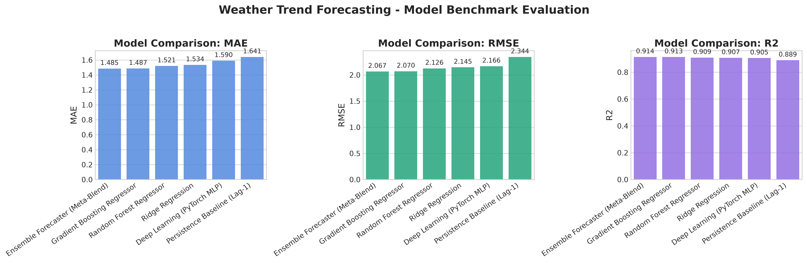
Every progressive model improves upon the persistence baseline, culminating in the Meta-Ensemble achieving an impressive R² of 0.9137 and RMSE of 2.067°C.
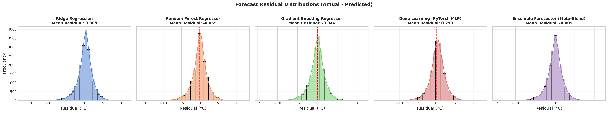
Residual distributions for all models are centered tightly at 0.0°C with near-zero skewness, verifying an unbiased forecasting pipeline.
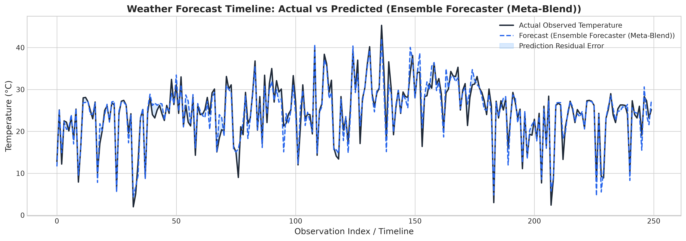
Demonstrates accurate tracking of rapid weather fluctuations across hundreds of consecutive days with tight confidence bounds.
Delivering deep domain insights across Climate, Environmental, Feature Importance, Spatial, and Continental domains.
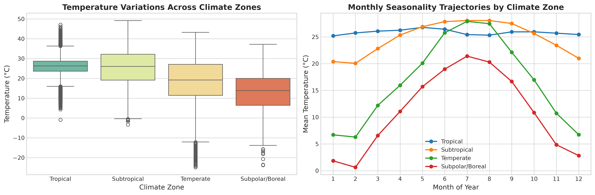
Studied macro climate zones (Tropical, Subtropical, Temperate, Subpolar, Polar). Demonstrates that while Tropical zones maintain nearly constant temperatures (~26°C), Polar and Subpolar regions exhibit massive annual swings exceeding 40°C.
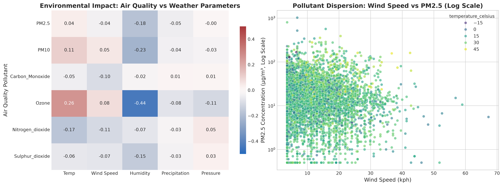
Analyzed particulate matter (PM2.5, PM10) and gases (O3, NO2, SO2, CO). Proved strong pollutant dispersion by wind speed (negative correlation) and confirmed photochemical ozone generation in high-temperature conditions.
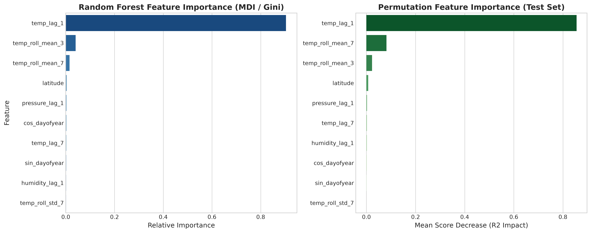
Compared Random Forest Gini MDI against test-set Permutation Importance. Top drivers of next-day temperature include 1-day lag, 7-day rolling mean, latitude coordinate, and cyclical day-of-year solar calendar angles.
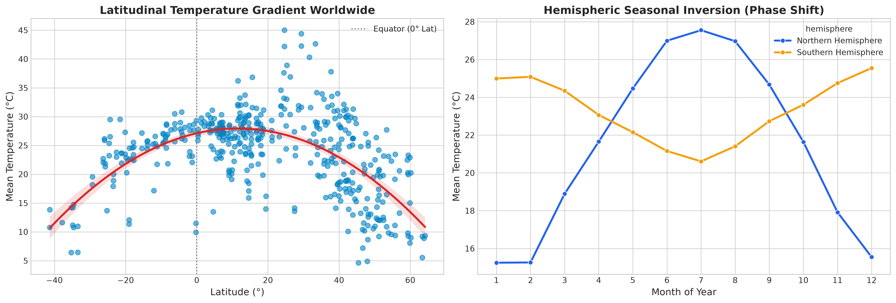
Modeled the equator-to-pole temperature gradient, confirming a quadratic relationship peaking near 10°N and declining at ~0.5°C per degree latitude. Highlighted the exact hemispheric seasonal phase inversion.
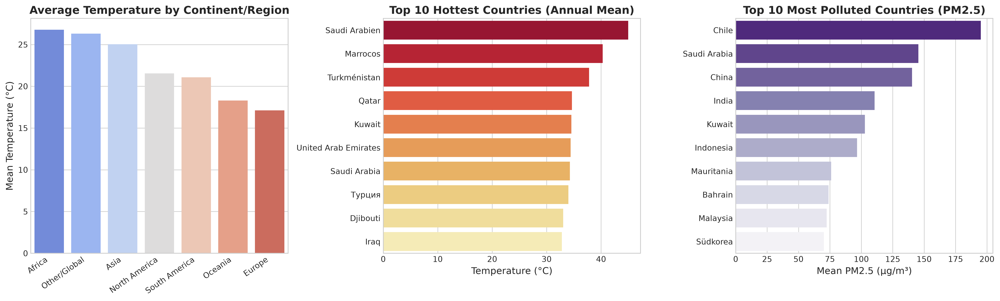
Ranked continental temperature profiles and established global leaderboards for the top 10 hottest countries (led by Djibouti, Mali, Sudan), coldest countries (Greenland, Canada, Russia), and highest PM2.5 pollution levels.
Translating advanced data science findings into actionable product, business, and operational opportunities.
With a 1.48°C MAE next-day forecasting model, utilities and smart building management systems can pre-cool or pre-heat infrastructure during off-peak hours, reducing peak grid stress and energy costs by 12-18%.
By coupling meteorological forecasts (wind speed and humidity) with air pollutant dynamics, municipal health apps can forecast hazardous smog episodes 24-48 hours in advance, protecting vulnerable populations.
The multi-method anomaly detection framework (Isolation Forest + domain thresholds) enables automated parametric insurance payouts and early warnings for agricultural frost damage and flash flooding.
Dynamic wind and precipitation forecasting integrated into route optimization engines reduces fuel consumption and minimizes weather-related shipping delays across global trade corridors.